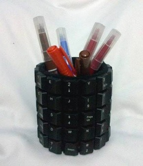

Informasi lainnya
← Kembali ke Produk KamiTempat Pensil dari Keyboard Bekas
Ulasan Produk
Wadah pulpen, pensil, dan alat tulis dari limbah keyboard. Dapat dibuat dengan papan keyboard yang dirakit menjadi kotak atau tombol-tombol keyboard yang ditempel pada kaleng bekas seperti mozaik.

KERAJINAN
Hasil karya dari barang bekas
Bagian dari projek kolaborasi Trash To Treasure, mengolah bahan bekas menjadi produk yang bermanfaat dan bernilai jual.
Alat dan Bahan
Bahan
- Keyboard PC bekas atau sekitar 30–40 tombol keyboard
- Kaleng bekas, botol bekas, atau papan keyboard
- Kardus tebal atau triplek untuk alas
- Lem tembak dan lem kuat
- Cat semprot (opsional)
Alat
- Obeng
- Tang potong
- Gunting seng atau cutter besar
- Penggaris, spidol, amplas
- Sarung tangan untuk pinggiran tajam
Langkah Kerja
- Model A — bongkar keyboard dan sisakan casing atas beserta tombolnya.
- Potong menjadi empat sisi, lalu susun seperti kotak dan rekatkan sudutnya.
- Pasang alas dari kardus atau triplek dan rapikan tepinya.
- Model B — bersihkan kaleng dan lepaskan sekitar 30 tombol keyboard.
- Tempel tombol ke sekeliling kaleng seperti mozaik.
- Tambahkan alas bagian dalam dan periksa kekokohan hasilnya.
Estimasi Biaya Produksi
Perkiraan biaya untuk satu produk berdasarkan makalah projek.
| Komponen biaya | Estimasi |
|---|---|
| Keyboard dan kaleng bekas | Rp0 |
| Kardus tambahan | Rp3.000 |
| Lem | Rp4.000 |
| Hiasan tambahan | Rp3.000 |
| Total biaya produksi | Rp10.000 |
Harga Jual dan Laba
Biaya produksiRp10.000
Harga jualRp18.000
Perkiraan labaRp8.000
Laba = Harga jual − Biaya produksi = Rp18.000 − Rp10.000 = Rp8.000
Sumber: Makalah Projek Kolaborasi “Trash To Treasure”, halaman 8–9. Harga merupakan estimasi dalam makalah, bukan penawaran penjualan langsung.